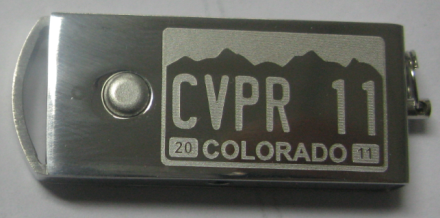
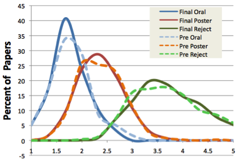
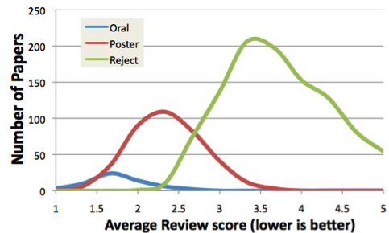

Message from the Chairs
Message from the CVPR 2011 General and Program Chairs
Terrance Boult, Shmuel Peleg,
Pedro Felzenszwalb, David Forsyth and Pascal Fua
1. Thanks
Welcome to Colorado Springs and the 29th IEEE Conference on Computer Vision and Pattern Recognition (CVPR). Following in the tradition of its distinguished predecessors, CVPR 2011 has a number of events co-located with the main conference, including 18 workshops and 8 tutorials. Our passport system allows registrants easy access to the conference plus other events, at early registration rates of $275 for student members and $400 for regular members; the passport provides a significant value for 6 days of events.

The publications of the conference and workshops proceedings are, for the first time, being made available on a customized USB Stick, providing direct access on most platforms as well as a being very useful keepsake of the meeting.
The team/venue of this 2011 conference was elected at the 2009 CVPR in Miami. CVPR 2007, 2008 and 2009 had all averaged about 1100-1200 attendees (CVPR06 in NYC was an outlier at around 1400) and so our plans were for 1100-1400. The increased size of CVPR 2010 caused some concern, and for the first time ever CVPR announced a cap on registration, limiting the meeting to 1500 attendees.
Thanks go to our Finance/Corporate relations Chair, Walter Scheirer, and the Registration Queen Ginger Boult, for their indispensible and wide-ranging contributions to the planning and running of this meeting. We also thank Shai Avidan (Workshop Chair) and Anderson Rocha (Tutorial Chair), along with the workshop organizers and short course presenters, for their contributions in making CVPR 2011 a premier event.
Special thanks go to our Publication Chair, Nicolas Pinto, for his tremendous dedication and effort that resulted in a smooth publication process despite the many problems and missed deadlines. As in the past, all published papers in the main conference and associated workshops will be indexed by IEEE, and available through the IEEE Digital Library. Unlike past years, the papers will have proper page numbers and each workshop will be separately listed in Xplore, not just combined into the "CVPR Workshops”. The change to having each author number their own pages saved us thousands of dollars.
We wish to thank our Steering and Advisory Committee (Kim Boyer, Rama Chellapa, Larry Davis, Dan Huttenlocker, Jitendra Malik, Takashi Matsuyama, Gerard Medioni, and Ramin Zabih), the previous Program and General Chairs, and other senior researchers in computer vision, for very helpful advice on a wide range of topics.
2. Submission/Review Statistics
The number of submissions to CVPR has continued to grow, and this year was no exception. To facilitate the online review process, we again elected to utilize Microsoft Research’s CMT System, with thanks to Pedro who managed the CMT process for CVPR11. We received 2020 complete submissions by the November 11, 2010 deadline. No extensions were given and papers that did not meet the submission criteria were desk rejected and removed from the review process. We found that a variety of random items, such as software manuals, were being submitted. It is possible that some people are trying to increase the number of submitted items to make the conference appear yet more selective. For this reason, we consider only the number of papers that reach the rebuttal stage when we compute selectivity ratios. We recommend future meetings adopt this convention so we have consistent interpretations. By the time the reviews were released to authors for rebuttals, the desk reject plus self-withdrawals had reduced the total papers for decision down to 1677 papers. At the end of the AC meeting, there were 59 papers (3.5%) accepted for orals and 379 (22.5%) accepted as posters, for an overall acceptance rate of 26.4% where percentages are computed using the 1677 papers that entered the full review process. In addition to the acceptances, there were 1052 formal rejections via the AC decisions, while 187 papers were rejected for administrative reasons (e.g. dual submissions) or were withdrawn by the authors after reviewing.
3. Review Process & Area Chairs
The review process for 2011 process was similar to recent years. Based upon an analysis of previous vision meetings, the size of CVPR2010 and discussions with previous Program Chairs and other senior members of the community, the 2011 Program Chairs decided to assemble the largest Area Chair (ACs) committee in the history of CVPR to facilitate a thorough review process. Our goal was simple: to conduct a rigorous and fair double-blind review process while providing good feedback to the authors. We invited leading vision researchers to server as ACs, seeking a balanced mix of first-time AC members and ACs experience. We secured the services of 46: Kobus Barnard, Peter Belhumeur, Serge Belongie, Tamara Berg, Andrew Blake, Michael Brown, Joachim Buhmann, Albert Chung, Bob Collins, Daniel Cremers, Sven Dickinson, James Duncan, Pinar Duygulu, Alyosha Efros, Bill Freeman, Polina Golland, Martial Hebert, Adrian Hilton, Derek Hoiem, Daniel Huttenlocher, Hiroshi Ishikawa, Jana Kosecka, Frédéric Jurie, Svetlana Lazebnik, Ales Leonardis, Vincent Lepetit, B.S. Manjunath, R. Manmatha, Deva Ramanan, Stan Sclaroff, Berndt Schiele, Andrew Senior, Jianbo Shi, Josef Sivic, Peter Sturm, Sabine Süsstrunk, Camillo Taylor, Antonio Torralba, Tinne Tuytelaars, Olga Veksler, Daphna Weinshall, Lior Wolf, Ruigang Yang, Ramin Zabih, Hong Zhang, Todd Zickler. The chairs thank each of them for their conscientious service to our community.
Here is a quick summary of the review process. Based on input from these ACs and previous organizers, we assembled a Papers Review Committee of over 900 members from the broader computer vision community. These reviewers provided over 5000 reviews in about 2 months time, and by the AC meeting all but a dozen papers had three reviews, and some had four to resolve discrepancies and wide spreads in reviews. The AC panels of 10-12 experts were told to use their best judgment on what was of sufficient quality to accept. The 4 panels were lead by David Forsyth, Pedro Feldzenswab, Pascal Fua and Terrance Boult. ACs first worked in pairs reviewing the reviews and then the panel discussed papers that were near threshold. If a panel said accept, it was accepted. If the panel said oral, it was oral. We also had our first experimental remote AC buddy pairs (due to illness/family emergencies), which worked reasonably well. S. Peleg managed the remote pairs and their work was then integrated with their originally assigned panels, including broader discussions. Before a decision was made on papers with a wide spread in reviewer scores, multiple ACs discussed them.
Discussions after rebuttal are not visible to authors but with 2029 total discussion messages, they are important in the decision making process as it often resolves discrepancies between reviews and adjustments based on the authors rebuttal. If there was a rebuttal, the AC read the rebuttal. If an author sees comments in the final decision about reviewers changing their "scores", it is almost always because the reviewer read/discussed it with the other reviewers and the AC. The Program Chairs did not over-rule any decisions by the AC panel, but asked for clarification on decisions where it was needed, and requested detailed consolidation. The double-blind nature of the CVPR review process was strictly maintained throughout the review process. As agreed when the team proposed, the General and Program Chairs are not authors on any papers submitted. In summary, the reviewing was blind, rebutted, reconsidered; the AC discussions and decisions were blind; and program chairs reviewed to make sure everyone followed the defined process.
Everyone should know that reviewer scores alone do not determine the decisions, and with significant variation in individual rankings, they should not be weighted too highly. Every year, some authors of rejected papers feel that, based on the reviews it received, their paper should have been accepted; others are unhappy with the reviews the paper received. It is not possible to avoid errors, though we tried very hard to do so. We offer data about our process below, because we believe that reviewing for a premier conference should be conducted with the greatest possible transparency consistent with a confidential process. We analyze the data to help understand the process effectiveness. The two charts in figure 1, show the distribution of scores (as percentage, and as numbers) for papers that were classified as oral, poster or reject. It should be evident that the curves are quite strongly separated, particularly if one allows for variations between reviewers. The oral/poster boundary is less well defined than the accept/reject boundary; this is natural, as a wide range of factors should go into that decision. There are a few rejected papers with a stronger average score than a few oral papers. This is a consequence of the multi-stage reviewing process used for CVPR, which has the goal of trying to ensure that one wild review does not disproportionately affect the fate of a paper. Discussions, rebuttal, AC discussions, the summary process, and PC's checking summaries are all mechanisms that help ensure the outcome is robust to outlying reviewer scores. The bottom graph of figure 1 shows the final score distributions have lower variance, and are more separated than before rebuttals and discussion.
|
  |
|
Figure 1: Paper score distributions. |
Another common question is how much review, rebuttal and AC processes effects a paper. The graphs in figure 2 show the changes, per paper, in "scores" before rebuttals and after decisions. As one might expect, oral papers decrease their scores (lower is better) while more scores for rejected papers increased. Posters were more equally split with some decreases (originally likely rejects) and some increases. There is no ground truth and labels (oral, etc) are decided after the scores have changed, but it does seem the process is improving class separation, suggesting it makes the reviewer deliberations and reviewing of the AC process/meeting significant.
|
Figure 2: Distribution of changes in a paper's average score from pre-rebuttal to decision. |

4. Sponsorship/Financial issues
CVPR11 has also introduced a significant change, being the first time the conference was not 100% financially sponsored by the IEEE Computer Society. At the conference, there will likely be some significant votes affecting the financial sponsorship of future CVPR conferences, so let us briefly summarize how CVPR 2011 ended up changing the model.
Part of the normal process of running an IEEE Computer Society sponsored meeting is submitting a budget, having that budget reviewed/approved by the computer society, and then the Computer Society providing a loan to cover pre-meeting expenses, such as the AC meeting. CVPR 2011 dutifully submitted its budget in June 2010. In mid-January, with less than a month to go before the AC meeting, the budget had not been reviewed/approved and no loan was in place. IEEE CS was contacted, again, and a few days later, the CVPR 2011 organizers were told the 2011 budget could not be approved because the CVPR2010 meeting had such a significant loss and we would have to change our budget. We knew that the IEEE CS administrative fees collected from CVPR2010 were approximately $118,000, but that given the increases attendance/revenue, IEEE CS expected over $170,000. IEEE CS budget model is to collect 20% of all conference revenue, independent of work performed. The 2010 organizers had provided IEEE CS the amount of fees originally budgeted but not a windfall from increased attendance – CVPR2010 spent the extra revenue on meeting upgrades (video overflow, fleeces, increased food). We also recognized that the 2011 budget, like the 2010 budget, included over $100,000 in "administrative fees" for IEEE CS for very minimal work on their part.
Through years of experience, 2011 general chairs understood that IEEE CS provides minimal direct value to the meeting other than the pre-meeting loan.[1] That loan was now in jeopardy. With the needs of the AC meeting less than a month away, instead of rebudgeting 2011 as directed, the 2011 General Chairs decided to drop IEEE Computer Society completely as a financial Sponsor and use the University of Colorado at Colorado Springs (UCCS) as the sole financial sponsor, leveraging Boult's endowed position to cover the pre-meeting costs. This unexpected and unprecedented move allowed for contract revisions for the AC meeting to directly bill to UCCS. The General Chairs put new plans in place to ensure a successful AC meeting, and save our community nearly $100K in questionable fees. In parallel, the general chairs lined up commitments from other IEEE subgroups for options to ensure we could continue to publish in IEEE Xplore (technical co-sponsorship) and potentially to keep IEEE in the conference name (which requires IEEE financial sponsorship, but not necessarily IEEE CS sponsorship).
While effective alternatives were lined up, there was considerable pressure to compromise and keep IEEE CS as at least a partial financial sponsor. The general chairs acknowledged that such a dramatic move as totally dropping IEEE CS, without a vote of the CVPR community, could be bad for the community. We also agreed that any attempt to poll or vote while the reviewing was ongoing could create the appearance of a conflict of interest. We made an executive decision while agreeing to compromise to include IEEE CS as a partial sponsor. It was agreed that at the actual CVPR 2011 meeting, the community could vote on future financial models.
The general chairs negotiated with IEEE CS, and on March 10, weeks after the AC meeting, obtained an approved budget, and eventually, by April, had a signed MOU for 50% financial sponsorship by IEEE CS. The MOU effectively reduces IEEE CS "fees", depending on meeting revenues, to between $40,000 and $60,000.
With the change in sponsorship, you might be wondering, "What happens with the savings?" Sufficient funding will be saved for a future CVPR's pre-meeting cost, giving us the flexibility to not have IEEE CS as financial sponsors. More immediately, we reduced member registration fees back to their lowest rates ever for a CVPR passport and yet, for the first time ever, lunch is on us.
When it comes to finances, it is also important to acknowledge the corporate donors who contribute financially to the meeting, supporting our paper awards, the doctoral consortium, reception/bars, and other important meeting enhancements. Our gold donors include Google, Nvidia and the National Science Foundation; Silver includes United Technologies Research Center, Point Grey and Springer. Our Bronze donors include Object Video, MobileEye, Honeywell, Microsoft Research, Kitware, Mitibushi Electric Research Labs, Cognex and IBM Research.
In closing, it has shaped up to be an excellent meeting. Once again, we extend our primary thanks to everyone involved in the submission process and review process: the ACs, reviewers and authors. Without you, there would not be a CVPR. We believe that the final output of this intensive process is well worth the enormous effort to continue the reputation of CVPR as one of the top quality conferences in the field.
[1] IEEE CS also provides a return of a small fraction (3.5%) of the fee plus 50% of any surplus to the PAMI-TC. The TC generally uses some of that for travel grants and/or receptions.

![IEEE CS]()